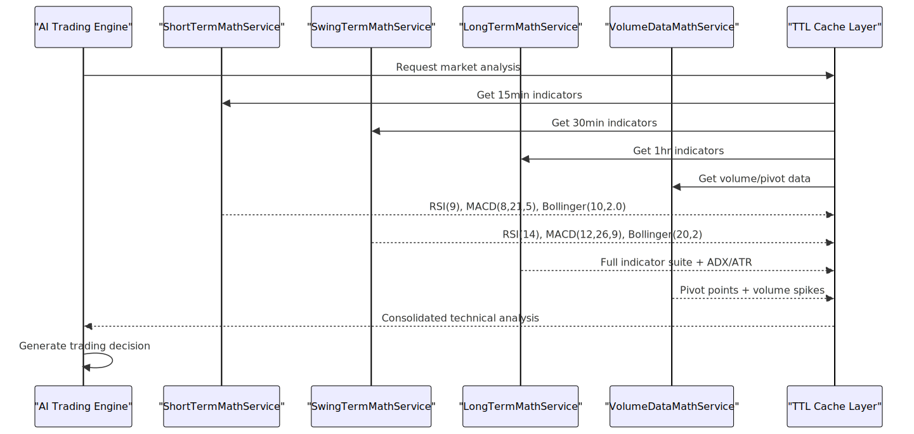

This document covers the six specialized mathematical analysis services that form the technical analysis backbone of the trading system. These services provide multi-timeframe technical indicator calculations, volume analysis, and momentum detection used by the AI Trading Engine for decision-making.
For information about how these mathematical outputs are consumed by AI decision-making components, see AI Trading Engine. For details about the agent consultation system that uses these services, see Agent Swarm System.
The mathematical analysis system consists of six specialized services, each optimized for different timeframes and trading strategies:

Optimized for 15-minute scalping operations with fast-reacting indicators for quick market entry/exit decisions.
| Parameter | Value | Purpose |
|---|---|---|
| Timeframe | 15 minutes | Scalping optimization |
| Candle Count | 144 | 36 hours of analysis |
| RSI Period | 9 | Fast momentum detection |
| StochRSI Period | 9 | Quick overbought/oversold |
| MACD | (8,21,5) | Accelerated trend signals |
| Bollinger Bands | (10, 2.0) | Tight volatility bands |
| Moving Averages | EMA(8), EMA(21), SMA(50) | Multi-layer trend analysis |
Balanced parameters for 30-minute swing trading with medium-term position holding capabilities.
| Parameter | Value | Purpose |
|---|---|---|
| Timeframe | 30 minutes | Swing trading balance |
| Candle Count | 96 | 48 hours of analysis |
| RSI Period | 14 | Standard momentum |
| StochRSI Period | 14 | Standard oscillator |
| MACD | (12,26,9) | Classic trend following |
| Bollinger Bands | (20, 2) | Standard volatility |
| Moving Averages | EMA(13), EMA(34), SMA(20) | Trend confirmation |
Comprehensive 1-hour analysis for position trading with extensive indicator suite and trend strength assessment.
| Parameter | Value | Purpose |
|---|---|---|
| Timeframe | 1 hour | Position trading |
| Candle Count | 48 | 48 hours of analysis |
| RSI Period | 14 | Standard momentum |
| MACD | (12,26,9) + Signal(9) | Complete MACD system |
| Moving Averages | SMA(50), EMA(20), EMA(34), DEMA(21) | Multi-MA confluence |
| Volatility | ATR(14), ATR(20) | Risk assessment |
| Trend Strength | ADX(14), Momentum(10) | Directional movement |
| Additional | CCI(20), Stochastic(14,3,3) | Oscillator confirmation |
Dual-layer analysis system for institutional activity detection and key price level identification.

| Component | Specification | Function |
|---|---|---|
| Long Dataset | 220 hourly candles | SMA(200) baseline calculation |
| Analysis Window | 96 hourly candles | Active scalping indicators |
| Volume Threshold | 1.5x average | Spike detection trigger |
| Pivot Points | S1/S2/S3, R1/R2/R3 | Technical support/resistance |
Micro-trend analysis optimized for 1-minute scalping with momentum and slope calculations.
| Parameter | Value | Purpose |
|---|---|---|
| Timeframe | 1 minute | Micro-trend detection |
| Candle Count | 120 | 2 hours of analysis |
| Price Analysis | SMA(15), EMA(15), Linear Regression Slope | Trend direction |
| Momentum | Momentum(10), Price Slope | Acceleration detection |
| Volume Analysis | VWAP, VMA(15), Volume Momentum(10) | Price-volume correlation |
Institutional activity recognition through volume anomaly and price-volume correlation analysis.
| Component | Specification | Detection Method |
|---|---|---|
| Timeframe | 5 minutes | Institutional timeframe |
| Analysis Period | 72 candles (6 hours) | Pattern recognition window |
| Volume Anomalies | Statistical variance analysis | Unusual trading volumes |
| Price Correlations | RSI divergence, MACD momentum | Manipulation patterns |
| Trend Analysis | OBV (On-Balance Volume) | Institutional flow direction |

All mathematical services adhere to strict formatting requirements for consistency across the trading system:
binanceService.formatPrice()binanceService.formatQuantity()The system includes seven specialized history services that provide historical indicator validation and pattern recognition:
| Service | Timeframe | Purpose |
|---|---|---|
LongTermHistoryService |
48-hour indicators | Long-term pattern validation |
SwingTermHistoryService |
48-hour swing data | Medium-term trend confirmation |
ShortTermHistoryService |
36-hour scalping data | Short-term pattern recognition |
OneMinuteCandleHistoryService |
15 x 1-minute candles | Micro-pattern analysis |
FifteenMinuteCandleHistoryService |
8 x 15-minute candles | Scalping confirmation |
ThirtyMinuteCandleHistoryService |
6 x 30-minute candles | Swing validation |
HourCandleHistoryService |
6 x 1-hour candles | Position trend analysis |
These services provide historical context for current mathematical analysis, enabling pattern validation and trend confirmation across multiple timeframes.

The mathematical services operate with 30-60 second TTL caching to balance real-time accuracy with API efficiency. Each service specializes in its timeframe while contributing to a comprehensive multi-timeframe analysis framework used by the AI Trading Engine.